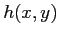

On the other hand, this is already much better compared to the 3D Deblending technique (Sánchez et al., 2004), which performs a 2D analytic modelling of each monochromatic IFU image to deblend the QSO and host spectrum. By design this method assumes implicitly that the shape of is constant over the entire field of view, which certainly affects the deblended spectra.
In the case of low S/N data the spatial regions to extract and can be enlarged compared to the best solution outlined above. This has the disadvantage of limiting the ability to decontaminate the QSO spectrum leading to oversubtraction effects. The user must find a compromise depending on the specific situation.
The deblending results will certainly depend on the assumed surface brightness distribution  of the host. Unfortunately, this cannot be self-consistently determined within the algorithm and needs to be determined externally, e.g. using high resolution broad-band images or via reasonable assumptions. Several options can be considered to set :
Another limitation of the algorithm is that the atmospheric dispersion, in particular the wavelength dependence of seeing, is not taken into account, because the PSF  can only be determined self-consistently from the data at the wavelength of broad lines. Several broad lines might be covered in the wavelength range of the spectrum, but the S/N may not be high enough to reconstruct the PSF with a sufficient accuracy for all of them. It is therefore recommended to restrict the deblending to a certain wavelength range centred on the broad line or to split up the data into several subcubes when more than one broad line can be used for the deblending. Only when a PSF star is in the FOV of the IFU one would be able to use a proper PSF for each wavelength. This will be possible with next generation instruments such as MUSE at the Very Large Telescope.
can only be determined self-consistently from the data at the wavelength of broad lines. Several broad lines might be covered in the wavelength range of the spectrum, but the S/N may not be high enough to reconstruct the PSF with a sufficient accuracy for all of them. It is therefore recommended to restrict the deblending to a certain wavelength range centred on the broad line or to split up the data into several subcubes when more than one broad line can be used for the deblending. Only when a PSF star is in the FOV of the IFU one would be able to use a proper PSF for each wavelength. This will be possible with next generation instruments such as MUSE at the Very Large Telescope.